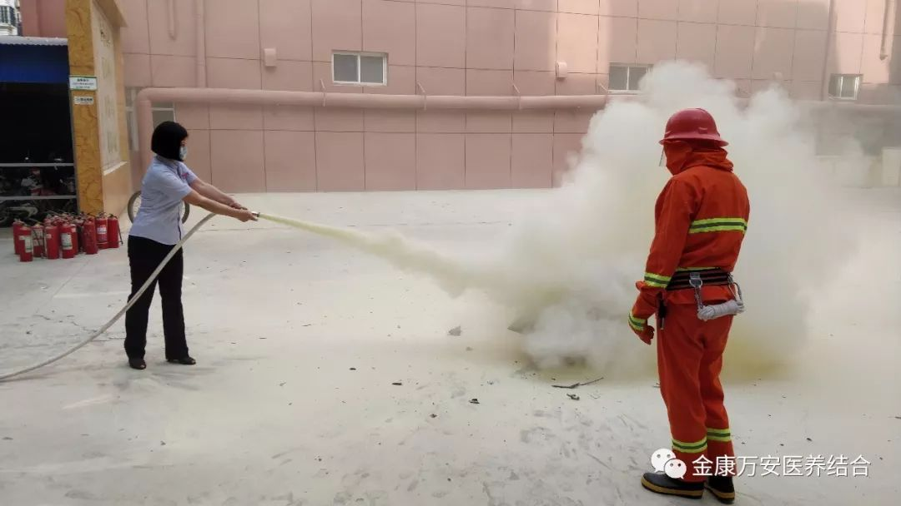
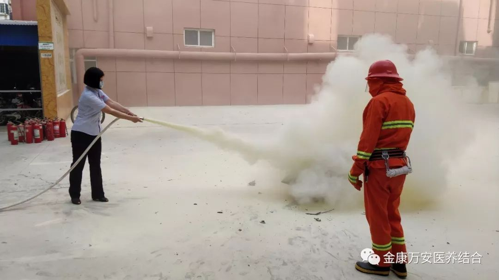

万安医院新闻
漯河万安医院、万安老年公寓、漯河金康护理院开展2018夏季消防演练
人气: " " 时间：2018-06-08
漯河万安医院
万安老年公寓
漯河金康护理院
开展2018年夏季消防演练
开展2018年夏季消防演练
为了进一步贯彻执行消防法中的“预防为主，防消结合”的八字方针，检验在院职工应对火灾的能力，考核日常消防培训、训练、实战的技能和成效，提高全体员工灭火、疏散、自救的能力和管理者火场组织、协调、指挥能力。使员工在演练中进一步增强消防安全意识，让预防为主，防消结合的方针更好的贯彻落实。2018年6月7日下午，漯河万安医院、万安老年公寓、漯河金康护理院组织全院员工开展2018夏季消防演练。
演练开始之前，河南勇安防火中心苗教官首先向大家普及了火灾防控知识，通过生动的讲解，鲜活的案例，让大家认识了火灾的发生及其危害性，增强了医、护、养人员的火灾危机意识、防范意识和责任意识，并掌握了逃生技巧。


培训完毕后，随着总指挥的一声令下，疏散演练正式开始。值班人员发现火情后，立即启动声光报警按钮，疏散组第一时间组织人员从安全楼梯进行疏散。

疏散人员有序的顺着楼梯向安全地带转移
 

领导及员工亲自学习使用灭火器
后勤杨院长进行总结
演练结束后，杨院长对此次演练进行总结。指出此次消防演练整个活动组织严密，参演人员严肃认真，演练活动达到了“消防安全、人人参与、重在预防”的预期目的。通过演练，进一步增强了医务人员及护理人员消防安全意识和防灾避险能力，确保遭遇突发灾害事故时能够及时有效地进行疏散救助，最大限度的保障住院患者及老人的生命安全。同时对全体员工能正确使用消防器材给予充分的肯定，最后希望大家要进一步提高安全生产责任意识。